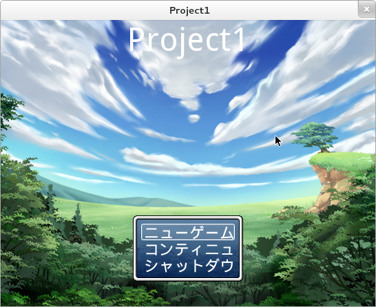
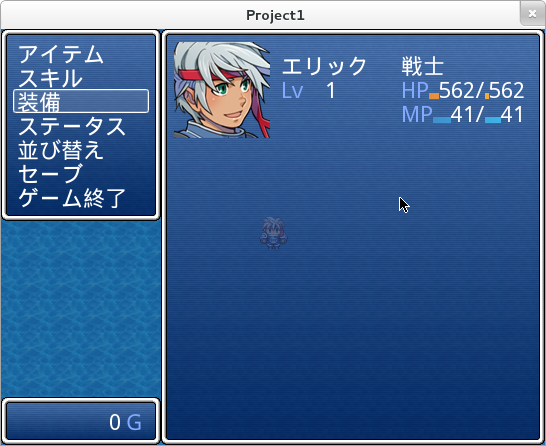

Welcome OpenRGSS.
OpenRGSS is an open-source implementation of Enterbrain's Ruby Game Scripting System. it's free and cross-platform.
Installation
simply download and install by rubygems
$ gem install openrgss
OpenRGSS-RPGMaker
if you are using RPG Maker (XP/VX/VXAce), you can use OpenRGSS-RPGMaker to load your project. https://github.com/zh99998/OpenRGSS-RPGMaker
a windows package with full dependencies (include ruby and OpenRGSS) is also available at https://github.com/zh99998/OpenRGSS-RPGMaker/downloads
Screenshot

Contributing
- Check out the latest master to make sure the feature hasn't been implemented or the bug hasn't been fixed yet.
- Check out the issue tracker to make sure someone already hasn't requested it and/or contributed it.
- Fork the project.
- Start a feature/bugfix branch.
- Commit and push until you are happy with your contribution.
- Make sure to add tests for it. This is important so I don't break it in a future version unintentionally.
- Please try not to mess with the Rakefile, version, or history. If you want to have your own version, or is otherwise necessary, that is fine, but please isolate to its own commit so I can cherry-pick around it.
Authors and Contributors
License
GNU LGPL v3 or later